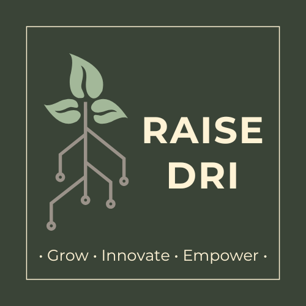

This website serves as a collection of resources and guides related to Data Science, Artificial Intelligence (AI), Deep Learning, High-Performance Computing (HPC), and Strategies for Managing Ultra-High Dimensional Data.
An overview of the Digital Research Alliance of Canada (the Alliance) and how it supports research innovations in Canada.
Learn about the Alliances’s Digital Research Infrastructure, which provides Canadian reserchers with infrastructure for research data managment (RDM), advanced reseearch computing (ARC), and research software (RS).
Get familiar with high-performance computing (HPC) and the Advanced Research Computing Resources offered by the Digital Research Alliance of Canada.
A beginner’s guide to Data Sceince, covering core concepts, tools, and methodologies.
Learn about the basics of AI, its applications, and how to get started using Python.
Explore the foundations of machine learning and deep learning, including neural networks.
Dive deeper into advanced topics in Deep Leanring, including Generative AI (GenAI), Large Language Models (LLMs), and more.
Learn about strategies for analyzing large and complex datasets.
Feel free to explore and check back often for updates on each topic!